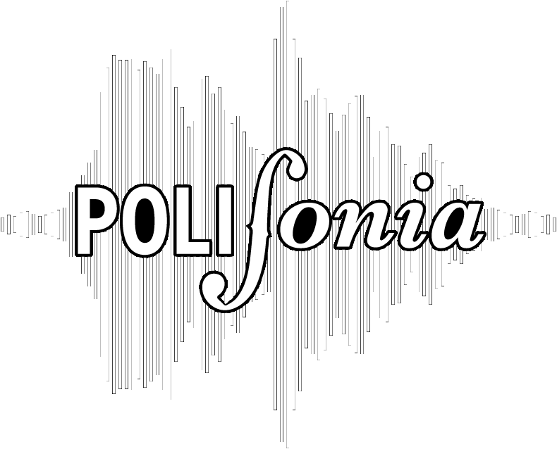

-
Since 2012, it wants to be a point of reference for all students of the Polytechnic of Milan, especially for LGBTI + students (Lesbian, Gay, Bisex, Trans, ...). We organize cultural events, such as discussions on current issues and conferences with relevant characters on the LGBTI + scene, as well as external events to make a group. Since 2017, it organizes PoliMi Pride to bring the face of the Politecnico to Milano Pride.
 PoliEdro
PoliEdro
-
Erasmus Student Network - ESN Politecnico Milano is a non-profit, apolitical association of students founded in 1992. Its aim is to support the student exchange programs, supplying information and any kind of help that can be voluntarily given by its members. ESN Politecnico is member of the Italian network, ESN Italia, and of the international one, ESN International, since December 1994. ESN International is a pan-European student organisation which was founded in Copenhagen in 1990. Since then, the network has expanded considerably. At the moment ESN consists of more than 250 sections in 30 countries. Despite its name, the network is devoted to students participating in all exchange programmes in Europe.
 ESN - Erasmus Student Network
ESN - Erasmus Student Network
-
We are a group of students and we spend most of our days in University. For this reason we are interested in improving the place we are in , to allow everyone to fully live the university experience, from study spaces to teaching on campus up to extracurricular activities. For these reasons we are running for the university elections and we want to meet anyone who shares this way of conceiving and living university. We are convinced that all those who are capable and deserving but lack the means should have access to this education and should be able to experience all that university has to offer, inside and outside lecture halls : for this reason our work is primarily focused on the right to study and teaching. We carry on a way of student representation which is open to any sort of confrontation, just like our name! An open window to build something positive through dialogues with students, other lists and the Institution: for us the other's point of view is an enrichment, it should be understood before being criticized. This way of conceiving and living university and student representation defines our list and has always defined it throughout our history since the mid-80s.
 Lista Aperta - Per il diritto allo studio
Lista Aperta - Per il diritto allo studio
-
Studenti Indipendenti is a group of Politecnico's students, trying to implement an alternative idea of university that defends students' rights and that is 100% independent from external parties and lobbies. Through student representation and activities that we do we work outside and inside the university governance to protect the right to study, improve students' conditions also by a psycologichal side and make the university years more serene by bringing proposals that arise from a confrontation with the students. During the academic year we also organize many cultural activities and events to allow students to disconnect from their studies and revive the nature university's nature: a place for aggregation and socializing as well as teaching and training. Not just university: we have always been committed to environmental, LGBTQ +, feminists, anti-racists issues and much more. If you have the desire and ideas to make Polimi a better place, contact us!
 Studenti Indipendenti
Studenti Indipendenti
-
POLI.RADIOPOLI.RADIO is the official web radio of the students of the Politecnico di Milano.
Play the music you already know and the one you've never heard. Indie, alternative and classic rock: according to the radio format AAA (Adult Album Alternative). -
 PolifoniaPolifonia was born from the need to create a musical, artistic and creative identity within the Politecnico. It aims to allow students to express themselves in all possible ways through music and to provide them with a space and events to perform.
-
Svoltastudenti was born in 2008 and is the first Italian and non-profit student association to reflect the Anglo-Saxon model of students' union. We have no connection with any type of political party, movement or religious group. We are a community, a diverse group of young people from most of the courses of the Polytechnic, united by one ideal: to involve students at 360 °. As an Association we believe that the university experience should not be limited to class hours only: for this reason we organize trips, sports and cultural activities in which all students can participate. Representation is the other soul of Svoltastudenti. We constantly strive for meritocracy and equal opportunities, we consider quality teaching and international experiences important, an opportunity for discussion and growth. We representatives are students like anyone else and we are in contact with those in charge of teaching and administration and we are able to help you with the most relevant questions: | address you to those in charge of problems with professors, to give you information on calls such as Erasmus and the right to study, carry on your causes and your ideas to improve the Polytechnic. If you have doubts about teaching or have an idea that you would like to develop within the Polytechnic, contact us on our social channels Instagram and Facebook
 Svoltastudenti
Svoltastudenti
-
The Terna Sinistrorsa is a student representation list present at the Polytechnic of Milan since 1995, open and non-partisan. We propose ourselves as a place of debate for the development of effective and innovative ideas that expand the possibilities of the University, giving everyone room for opinion and comparison.
 La Terna Sinistrorsa
La Terna Sinistrorsa
Our idea of university is based on the right to study, quality of teaching, secularism, anti-fascism and fight against any discrimination and inequality.
Together with the representation activity we enhance university life with various cultural activities, from the historic visit to the Venice Biennale to the days of fun on the Bovisa campus, the Poligames!
Much more can be found in our social networks, there is a whole world to discover, take part too!